Issue #1 — To Utopia
The Constellations
The End of the Straubs’ Films
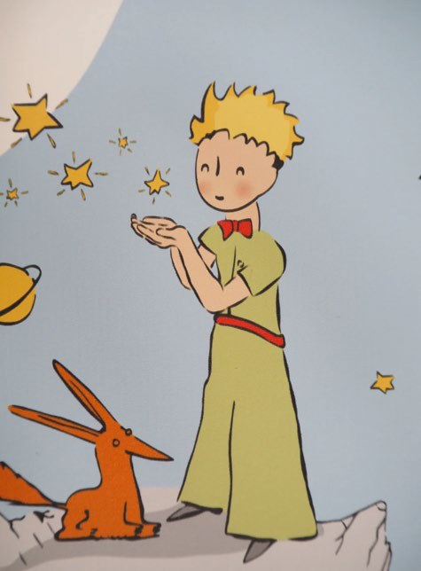
Let us arrive too early, let us arrive too late… At least, let us arrive. Before speaking of the end, let us speak of the beginning. The Straubs’ very first film to be released in cinemas, Machorka-Muff, deals with the resurgence of militarism in postwar West Germany, implying the prospect of the country’s rearmament. “Right on time!” is roughly what Jacques Rivette said in 1963, wondering whether this short film was not “the first (small) auteur film in all of postwar German production.”1 And yet… already too late. Jean-Marie Straub claimed that, unlike Godard, he was unable to make films about the immediate present.2 He always arrives after the fact. The rearmament of West Germany and the debates about a second Nazification in positions of power were by then already commonplace. He presents his film, precisely, as “the story of a rape.”3 After the fact, the task is to make history. Let us recall that Machorka-Muff begins with a delay: that of Machorka, who looks at the landscape because it was too late to call. A kind of resilience, the camera lingers on Machorka’s hand as it moves away from the telephone, then probes the city.
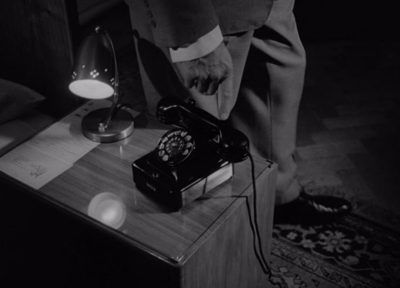
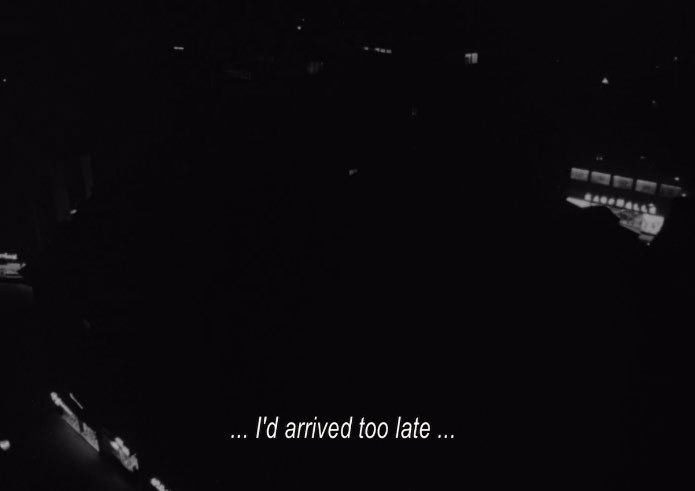
Critics have certainly not failed to file the Straubs’ cinema away in the category of “political” films. More precisely, Comolli and Narboni classify Not Reconciled (1964) among the films “with both a political subject and a political form,” and regard this configuration as the only one capable of reacting to the dominant ideology.4 It would seem that one can arrive after the fact and still be politically useful. Before asking the question of the effectiveness of the historian’s method, and even before thinking about ways of filming historically, let us first see how the filmmaker-historian, aware of his status, conceives of temporality, in order to arrive at what follows from it.
On Encounter
There is, of course, on the one hand, in the Straubs’ films, the awareness of a present founded on the past. Merovingian cemeteries in “Lothringen,” the cave of the communist resistance fighters in Othon, the mountain — a former volcano — in Empedocles: the vestiges in the Straubs’ films bear witness to a sedimentary present, opened onto a negative horizon, like Benjamin’s angel who looks toward the past. Although some of these histories are shown or heard by the spectator, most of them are not communicated, which above all allows the filmmaker to film space precisely in its present, whose surface is better felt by those who know how to feel what it conceals.
“There is a painting by Paul Klee called Angelus Novus. It shows an angel who seems about to move away from something he is staring at. His eyes are wide, his mouth is open, his wings are spread. This is how the Angel of History must look. His face is turned toward the past. (…) He would like to stay, awaken the dead, and piece together what has been smashed. But a storm is blowing from Paradise; it has got caught in his wings with such violence that the angel can no longer close them. This storm drives him irresistibly into the future, to which his back is turned, while the pile of debris before him grows skyward.”5
The dizzying backward gaze from the hill of time produces images charged with memory. The spectator is compelled to perform an act of memory by projecting their gaze through time by means of the matter they are looking at, to live inside the phenomenon in order to apprehend it; they must make history out of matter. They discover in the image a mysterious, deep present, whose movement one suspects through the envelope. No living being is independent of what precedes it. Even before the gods, there were already the stone and the serpent, Tiresias reminds us in From the Cloud to the Resistance; men come from the past, fruits of encounters, and themselves progress through encounters.
Let us see the notion of encounter in the Straubs’ films as the poetic translation of a subjective, even carnal, approach to the principle of cause and effect. Instead of encounters, we could speak of the things that affect us, thereby provoking our evolution in space. The movement then extends to the whole metaphysics of the shot, for, confronting us, the entity encountered departs affected. If men and their environment always evolve through encounters, then encounters become the engine of total movement within the frame. Perhaps this is the notion of “wind” in the Straubs’ films. The now-famous quotation from Griffith6 was understood by everyone: the wind makes the leaves of the trees tremble; the spectator derives from it the satisfaction of the simultaneity of elements that interact with one another and produce movement, that is, the pleasure of encounters. Perhaps, from this perspective, we will better understand why J.-M. Straub judged that the music in Anna Magdalena Bach was the wind that makes the leaves of Griffith’s films tremble, in that it drives the film’s movement. “For the first time there is wind on a screen. And we see many things that come from the wind. There’s no tree and there’s no wind, but there’s everything that moves, and everything that moves comes from the music. The music is the wind, and what moves are the wigs, the fingers, what sets in motion the musicians who produce the music. We see thousands of things that have never been seen anywhere in such numbers on a screen.”7
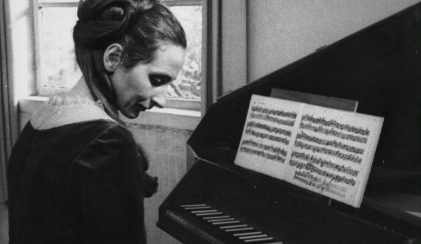
The spectator is thus made a reader of a musical score, each note answering a system, making one another legible. Since movement is conditioned by an encounter within the shot, all movement is made useful, and since abstraction strips the world of some of its forces, every flux is made perceptible. By the very nature of a shot that renders legible the forces that inhabit it, the spectator will be made sensitive to events that are not produced in the shot, that is, to utopia. It is like this, but it could be otherwise. From the affectivity of the principle of cause and effect, encounters admit the physicality of objects in space, that is, the formation of temporary spatial links between certain elements of the frame, while at the same time providing for passive relations of separation, of detachment, and thus of non-encounters at a given moment. This means that the spectator’s visualization of isolated encounters, in an economy of advent, lends the spectator the key to the clouds — that pleasure in deciphering the engines of destiny that one discovers in the movement of the very matter of the shot. Since everything in the frame has its reasons for being, and everything can produce reasons, one senses that encounters are a matter of situation; every element of the frame then becomes important, worthy of interest, as it benefits from a general metaphysics of the film that considers each thing as inherited from encounters and liable to be encountered. Quite apart from the quantity of encounters, their quality increases through the attention that the filmmaker-historian gives them. The geometry of encounters rests on the sequence of positions of the different parts of space, and the filmmaker-historian’s apperception of this geometry allows them to maximize the range of sensations in the film.
Perhaps it is a fancy, but I take pleasure in recalling that the Straubs waited several months of hikes and discussions in the mountain of The Death of Empedocles before filming it, in order to know it better.9 The first step for a film to be worthy of attention is perhaps that the filmmaker himself judges that what is in his film is worthy of attention, “aesthetics” designating above all an attention to the sensible. Can one tell a story without knowing it? Perhaps, too, Jean-Marie Straub was right to think that Fritz Lang knew how to film benches well because he was an architect10, or to say that, to film snow, one had to know that it was historically dangerous before it was beautiful11. And perhaps Hitchcock was also right to consider that one had to be a bit of an architect to film buildings.12 Let us avoid the pitfall of reproduction, which consists in applying cinema techniques at random to environments, whereas technique should depend on the environment, for the encounters that produce movement are specific to the rules that govern them. Straub calls these filmmakers “parachutists”13, that is, people who arrive somewhere without knowing where they are and start filming without consistency. Parachutists, according to him, have the bad habit of treating space like rubber14. At the very least, setting the historian’s perspective aside, one can say without much hesitation that the latter allows the filmmaker to film space specifically, that is, to adapt his method to the particular contradictions of the part, and thus to offer an original film, arising from a unique relationship with the thing. The internal mechanism of the film that admits the particular histories of matter is infinitely more complex than that of the filmmaker who is content to affix his mental image to fantasized environments. The richness of a film’s images is measured, in my view, by their capacity to survive the film’s mechanism. What remains of the mental image? Dead images are those that, once seen, vanish, possessing no existence of their own. Serving the concept, they borrow the methods of advertising and propaganda. They are empty, anecdotal, illustrative of a theme, representative of an idea; symbolic, they are mere footbridges between idea and idea.
Toward Constellations
Unlike films of contemplation, historian films are aware of being artifacts themselves, and know the force they exert on what they film. If the filmed matter has a particular past, it also has a specific future. Aware of the encounter of the image with that of which it is the image, the filmmaker-historian knows that he shapes a history of the matter he devotes himself to filming. There is thus, on the other hand, as a consequence of the system of encounters, the awareness of a present containing the future in potential. Thus, during the very first scene of Machorka-Muff mentioned above, one hears in German: “I wanted to call Inn, but then decided not to… I’d arrived too late… so the view from my hotel room had to compensate… There are energies out there not yet realized.”
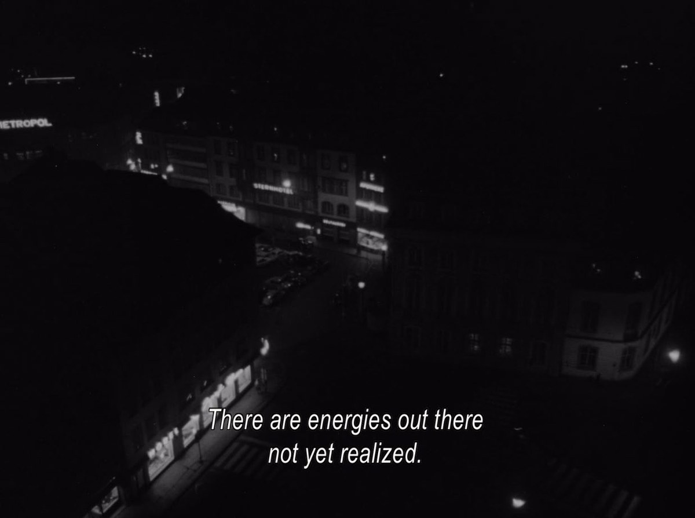
In the landscape, the filmmaker-historian discovers potentials, virtual energies; he suspects the future in the rubble of an image. The filmmaker-historian’s utopia is a possibility, an ember in the ashes, which he tries to revive with his breath.
“It is certain, and evident to our senses, that in the world some things are in motion. Now whatever is in motion is put in motion by another, for nothing can be in motion except it is in potentiality to that towards which it is in motion; whereas a thing moves inasmuch as it is in act. For motion is nothing else than the reduction of something from potentiality to actuality. But nothing can be reduced from potentiality to actuality, except by something in a state of actuality. Thus that which is actually hot, as fire, makes wood, which is potentially hot, to be actually hot, and thereby moves and changes it. (…) Therefore, whatever is in motion must be put in motion by another. (…) Therefore it is necessary to arrive at a first mover, put in motion by no other; and this everyone understands to be God.”
This extract, which sheds light on the idea of the necessity of an actual force to make a possible actual, all the more pertinent since J.-M. Straub described himself as a Thomist16, indicates how the filmmaker-historian assists encounters. By fabricating the abstract world of the film, the filmmaker plays the role of first mover, to which the generated structure responds. He demonstrates his capacity to illuminate ghosts, those contradictions that wander and that society does not see with the naked eye, or to which it at least gives no importance, but which nevertheless inhabit the real. By reconstituting on screen what he has found in the vestiges, the abstract structure of the film, issued from the world as the content of an object, becomes in turn determining. It is an encounter between the film and the world. The little god filmmaker, as a link in the great chain of the great God, has fabricated a small world within the great world, piercing it like a drill. Within it, the ball of thread unwinds. One thinks of those creative hands of Robert Beavers in The Ground, or of the magician hands of Gregory Markopoulos in Swain. Guide of the night, the filmmaker illuminates a path, makes possible a thought of resolution by opening a space of response; he kills the will-o’-the-wisps by sweeping away the superfluous. Let there be no misunderstanding: little teleological feeling. It is perhaps a skilful throw of the dice, which, however masterful, will never abolish chance. Here is a possibility, here is a link one can draw, and another one can erase. Once fixed in a form, the film becomes necessity a posteriori. It becomes an organism made of images that float above the real, developing autonomously, while making history of the real of which they are images, that is, the history of another image whose secrets they unveil. Chance endures, but here it is now constellated.
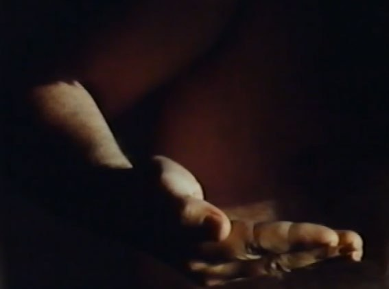
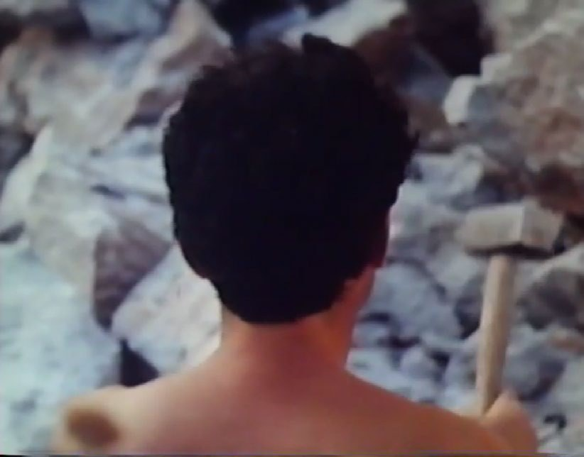
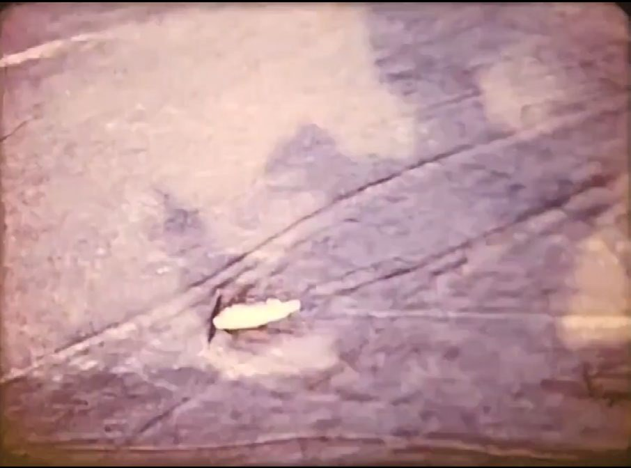
Surely Yasujiro Ozu was right to think that “the end of a film is its beginning.”19 We would like to hope that a film can identify constellations powerful enough to transform the spectator. But it would perhaps be more realistic to think that such constellation-films hold out a hand, offering the spectator “another path,” another way of seeing. Overcoming uncertainty is something no Straub film has attempted. Helping us to see and hear a little better20, or else making films that are respectable for citizens (bumping a little less against the aquarium glass): these are chiefly the Straubs’ pretensions.
Intellectuals had clearly understood that the inner self is in part produced by the objective conditions of existence, and that political change could give the individual the possibility of developing it. Brecht himself asserted that it is a received idea to think that better films, chosen by enlightened experts, would raise popular taste.21 He judges that “the political interests and the Schillerian project of intellectuals to make political education a matter of aesthetics” are structurally doomed to failure, since they ask the industry to act against its own commercial interest, distributors treating public taste as an economic rather than an aesthetic given. He prophetically concludes that “it is not better films that can change this ‘public taste’ that spectators have, but only a change in their conditions of life.” This is true: public taste will necessarily change with the improvement of material conditions; only, it will shift mainly in relation to the public’s new interests. I do not believe in change without a prior revolution of the “aesthetic sense,” etymologically the faculty of feeling, of its science of sensible knowledge, the condition of all politics, for there is no content without form. “At the heart of that garden, there will be nothing but beauty.”22 Thus the constellations, those disruptive images, butterflies released into the sky, trace the road of a new politics, driven by the wind, that music.
It seems that, more than ever, and the broadcast of the Straubs’ films in Tokyo or on television in Germany already bore witness to this, the public is likely to be affected by alternative cultural productions.23 Jean-Marie Straub would recount with enthusiasm the German letters he received after the television broadcast of History Lessons, from people who had no idea who Brecht was, asking for instance who the author of the adapted book was, or where one could obtain it.24 In practice, it is a matter of producing works that resist the cultural industry in their very essence, which the public will notice as something different, a participation in an aesthetic emancipation, actively fabricating demand through the natural expression of the inner self, that is, existence, the only resistance. This is long-haul work: a television man answered the Straubs regarding the broadcast of Othon: “Before that film can be shown, there would have to be a revolution in France.” But J.-M. Straub adds that “since then, there has been a small one, or the appearance of a revolution,” although “the film still has not been shown.”25
Jonatan Briel said: “I conceive of my cinematic work as a means of struggle for a new and revolutionary interiority, which represents for me one of the essential conditions for the advent of a truly new society on this planet.”26
Marguerite Duras also said that “woman’s first liberation, the first, the first step, the most decisive, the most important, is her willing (…) She must dream herself… dream about herself, calmly (…) she must leave the common dream,”27 and “I believe that if one does not take this inner step, if man does not change in his solitude, nothing is possible. All revolutions will be rigged. (…) It is the end of the ‘me,’ the ‘yours,’ the ‘mine,’ but with the ‘self’ being kept completely.”28 And the revolution is in the heart of the man of the stars.
I consumed myself, and my ashes became lives.
Once more, my ashes, out of desire for your burning,
Came back and took on a thousand new faces.29
The Curious Astrologers
Perhaps the notion of abstraction has so far been defined too loosely to account fully for the interest of the Straubs’ films. Concretely, what forms do these constellations take? How do they resist the real? If we characterize abstraction only by its capacity to reveal hidden relations within the real, then the educational science film falls within it. I will argue that the encounter between abstraction and the real, which constitutes the demystifying constellations, is an encounter of forms before it is one of themes.
Let us start from experience. One is sometimes unsettled while watching a Straub film: a strange diction, a particular rhythm, a way of filming… The spectator witnesses something else. Very often, critics call the Straubs’ cinema “Brechtian,” thinking of a certain distancing of the spectator from the film. Surely this is partly the initial coldness that many feel on seeing these films. That coldness, moreover, need not be taken negatively, since Jean-Marie Straub himself has said that Arnold Schoenberg’s music is very cold, yet its distinctive quality is that it stirs the listener.30 The time capsule that is the reel crystallizes in a form the state of a disordered subject; depending on who studies it, it is closer to a lump of ice than to an ice core, as most of their detractors have reproached them. Many people thus report the feeling of seeing a UFO, a farce, a fantasy that is not serious, or too serious. I believe that this first impression of a film that keeps one at a distance gave rise to a misunderstanding that persists and sustains the idea of an austere, elitist, pretentious, even bourgeois cinema. Let us start from “Brechtism” and return to the Straubs.
Brechtism is, roughly, the idea of a theater that invites the spectator to rationalize the dramatic events by allowing him to think about the content of the play he is watching, through mechanisms that prevent identification with the characters. Nenad Jovanic argues that the end of Brecht’s career comes closer to an Aristotelian theater31, that is, one in favor of the spectator’s identification with the characters, but one can readily argue that most of Brecht’s theory consists in opposing this passive identification. Brecht, moreover, made his character Mother Courage more cunning because the spectators were crying too much and could no longer concentrate on the critique.32 Brechtism is active in its substance, since, in opposing the naturalization of events, it awakens the spectator’s spirit of contradiction, making the motifs of the age vulnerable. Authors such as Tag Gallagher33 or Nenad Jovanic have reflected on the question of adapting the Brechtian method in the Straubs’ films, but the modalities vary so much from one film to another that I will skip the analysis of each film in turn. One would find, in fact, that the various so-called “Brechtian” traits all refer, in their main effect, to my developments on temporality in the Straubs’ films: the present is constructed as a moment of flux, and therefore as transformable. Brechtism, Jean-Marie Straub reminds us, is above all “a concrete reflection about a concrete piece of craftwork”34; let us therefore see rather what the use of the term reveals about a certain general conception of the Straubs’ cinema.
Let us start from the premise that the Straubs do not refuse identification, and never seek to prevent it. I will not say that all of the Straubs’ films play on identification (one could, moreover, describe Machorka-Muff as a cold, analytical film), but rather that, if there is ever identification, there is necessarily fabrication. Is it not partly Ernesto’s vitality in their film En rachâchant that allows the spectator to see what school prevents from being expressed? Is it not likewise the wolf’s agony in From the Cloud to the Resistance that allows the spectator to understand the moral dilemma of the myth?
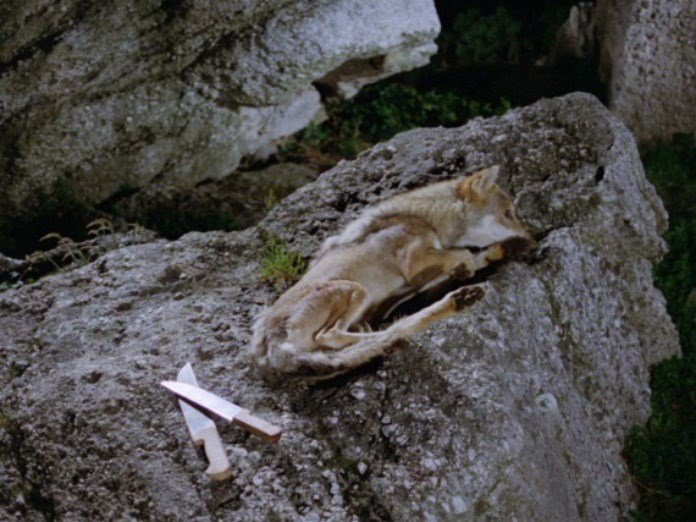
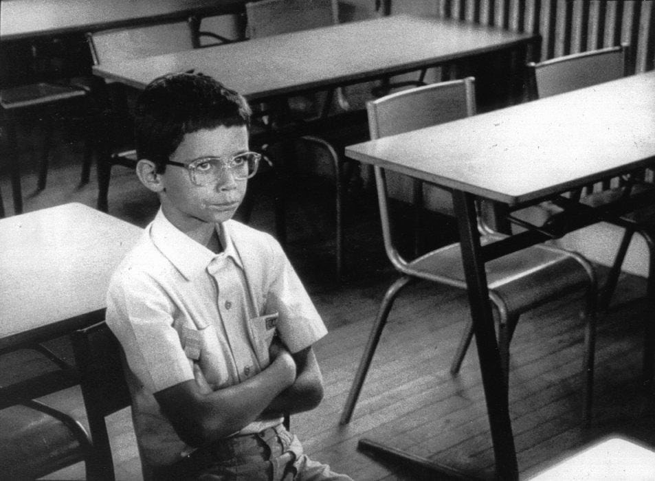
Thus the Straubs’ films depart from Brecht’s method by admitting an active identification, but they carry on the purpose of Brechtism, that is, the possibility for the spectator to think about what he is watching, with empathy making this possible. There is no Brechtian separation between cognitive empathy and affective empathy, for it is perfectly possible to understand another’s point of view rationally while physically feeling what he feels; it is even possible that the latter enables the former. Some authors even argue that Brecht also uses empathy so that the spectator may then withdraw his solidarity35, along the lines of what Bazin understood of Monsieur Verdoux36, although Brecht himself remains more reserved on the question, noting nonetheless that “Yet the spectator’s empathy was not entirely rejected. The audience identifies with the actor as an observer and thus develops its attitude of observation, its gaze.”37
The method of distancing has been taken by critics for what it is not38: a withdrawal of the spectator from the film he is watching, whereas it consists above all in a withdrawal of the spectator from his own social position, in order to give him the possibility of thinking about others, of performing an act of empathy, of better understanding objective differences subjectively. At a time when empathy is undermined by modernity, becoming an obstacle to progress and to science, it seems necessary to me to reconsider it, to make it productive rather than a mere corollary, to foil the rise of a “science without conscience.”39 Brecht had developed a scientific theater, dissecting the world into an object of examination, without however going beyond the spirit of the age to which he belonged, that of science. Starting from science, he proposed an empathy in the understanding of the other through the analysis of objective relations.
The contribution of empathy as the starting point of the Straubs’ cinema, within a scientific dramatic system, defeats the modern commonplace according to which emotion is the enemy of progress, without even letting the problem bloom, as well as the notion that empathy and feeling are a woman’s business, and that one must keep a cool head (meaning: subtract the emotions) to deal with problems. I maintain that the Straubs’ contribution to modernity is to start from empathy, the sense of contact, of drawing close, and that the intellectuals’ association of the Straubs’ cinema with a term as totalizing as Brechtism has considerably curbed its revolutionary potential. One shows solidarity or withdraws it by putting oneself in someone’s boots. Rather than virtualizing human relations, looking at them through binoculars, let us take them head-on and see how they make a science of the self. To refuse the spectator’s “Aristotelian identification,” because one sees better without grime on the windowpane, is for the Straubs to plunge him into the thing so that he feels its differences up close, within a filmic regime that allows the deconstruction of the empathy he feels. The Straubs’ contribution relative to Brechtism lies in their method, which, starting from the carnal, does not dry the beggar’s tears. Modern science, by reducing the real to objective determinations, forgets the sensible life from which it proceeds. Without reproaching Brecht for it, one can read in the Straubs a return to what Michel Henry40 called the appearing of life, that is, bodies that experience themselves in acting, an affect that is not the effect of thought but its condition, and from which science itself proceeds. “Know in order to feel better, feel in order to know better,” said Cézanne.41
Look at all the literature on a certain “Brechtian” diction of the text by the actors, then observe the way Jean-Marie Straub trains the actors he works with, correcting them constantly, imposing on them a certain reading of the words, a certain tone. It is truly a psalmodic apprenticeship of a nursery rhyme. Often, the rhythm of the dictation takes precedence over the meaning of the words, and the musicality stands out more to the spectator’s ear. In Othon, it is precisely the diction of a text too dense and read too quickly to be understood all at once that allows the spectator to be sensitive to what remains outside the meaning of the text. What would Brecht have thought of a voice that charms? One could certainly argue for the Brechtian effect of such a device in Othon. Setting the meaning of the text aside, the spectator can concentrate fully on perceiving the social gestus, that is, the relations between the characters in the film that indicate their social position, revealing a class relation. He might notice the accents that resist the text, or the noise of the cars passing in the background that contrasts with a play by Corneille. Yet, although all this is true, the spectator will feel even more that intense feeling born of the direct encounter between sound and image. Half left behind by the meaning of the words, he is released into the nature of the film, and discovers that the whole arrangement of “Brechtian” consequences, although still effective in revealing the gestus, also participates in the film’s overall eroticism, adding their singularity to the physics of the shot. The sensuality of the coexistence of flowing water, particular voices, and the stretching landscape already offers in itself a response to modernity, while avoiding the uniformizing romantic image, thanks to the revelation of what hinders utopia in the shot, through the projection into the sensible world of the states that constitute its hidden springs: an enchanting embroidery, a disruptor of matter. Straub, moreover, considers his film Not Reconciled one of the least distanced in the world” and adds: “just as Ford’s films are the most Brechtian”; which shows that distancing is one method among others for attaining strangeness, that breach in the real, or the real itself. Strangeness, attained differently according to the method of each Straub film, gives the common back its mystery; it produces a new sensibility preceding knowledge, a new poetry, anchored in profane matter. Strangeness is precisely the form of these constellations, upsetting the dominant constellations by proposing a new way of seeing the moon and the sun, wresting from the dominant ideology, boring in its monotony, the privilege of commanding the stars. Slumbering in the nothingness of a nihilistic science, modern images demand an external, transcendent greatness to justify them, calling for the meaning of another planet; then the Straubs’ images take flight, and from the sky, offer a reflection.
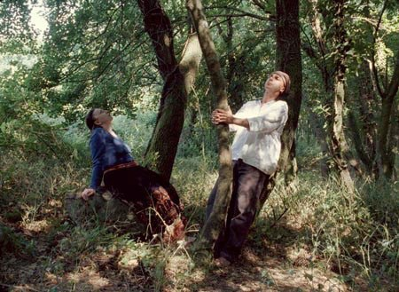
On Black Holes
Strange images, parasites that contaminate perception: mistrust is in order. Here, a certain taste for magic has been drawn out of physics, or as Rimbaud put it43:
If I have any taste, it is hardly
For anything but earth and stones
Since a return to deism is impossible, the poetics of the image leads back to a pantheism, or at least to a secular beauty, bringing God back to matter and cutting the heads off capital letters; for the common and the mystical are both made into enigmas, a reconstitution of matter in its chaos, and a proposition of love. May the experience of the image give rise to the competence of a just judgment of the real causal weight of the forces at play. In this, the idea is born from the image and follows from it naturally. The image pollinates meaning, for from matter it allows flowers.
Most of the Straubs’ films do not, strictly speaking, carry a message; they simply set about deconstructing, finding within things, and letting their forms be an opening in themselves. But J.-M. Straub acknowledged that there were messages in some of his films, that is, films that propose an answer, whose construction leads to a meaning, which may be more or less open. He cites The Death of Empedocles as the first film with a message, producing a “communist fabric,” “easy to make but complicated to foresee,” and also a small message in Moses und Aron44. I further believe that the messages multiply after Danièle’s death, to the point of forcing the landscape’s hand in a film like Les Gens du lac. The end of Jean-Marie Straub’s career is much less laden with interviews, in keeping with his wish to be able to make all of his public statements disappear.45 Perhaps it is time to open a trial of filmmakers, as Jean-Marie proposed with a laugh46, for there is less separation between the Straubs’ films and their interviews than they let it be understood.
I believe that most of the surprises in the Straubs’ films lie in the shock, found above all at the end of their films, but also in certain intermediate cuts, such as the moment of the handing over of the coat in Machorka-Muff. These effects have something of Benjamin’s “revolutionary interruption,” an unexpected encounter, a surprise of editing, a bursting open of the continuum of history. Had you noticed that most of the Straubs’ films end on a shock, that is, on the most strange editing experience for the spectator? To cite only a few: the final sentence in Lothringen, or that of From Today Until Tomorrow.
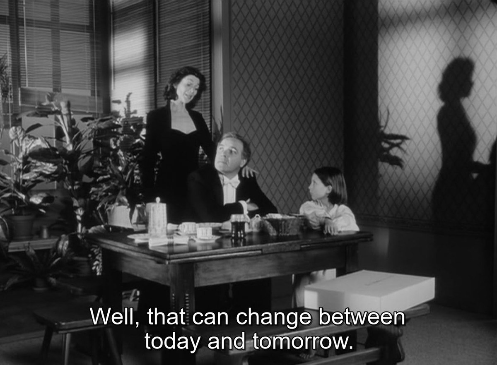
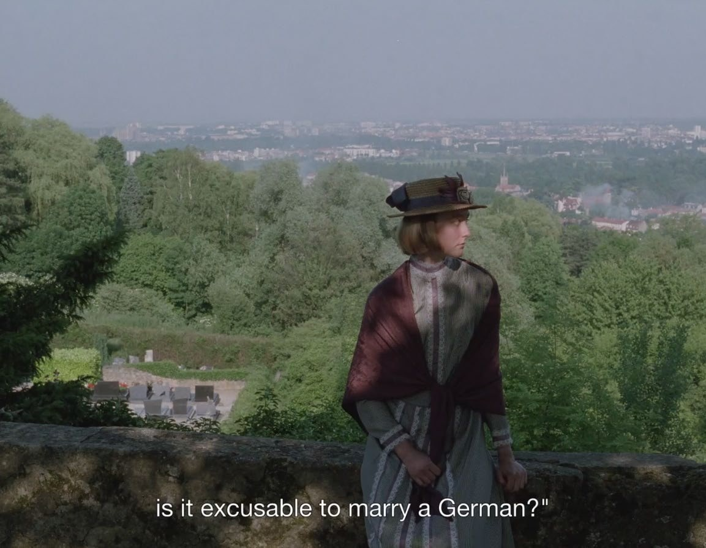
I believe that messages take shape in these shocks of endings. It is hard to deduce them, but one ends up deducing them all the same from the end of Lothringen, in which one notices a resistant nationalism, a fidelity to an identity, foiling Barrès’s book more in its justification of nationalism than in its purpose. Likewise, from From Today Until Tomorrow, one draws out a critique of fashion, of its insertion into the private sphere, and more particularly of the way it attacks fidelity and promotes ephemeral relationships. These half-assumed messages surprise the spectator but are unable to enlighten him: meant to be disruptive, they at the same time give the answer within the enigma, bringing their shadow back. By turning Lothringen over in every direction, even supposing that the Colette who speaks is a puppet revealing the ideology that makes her utter these words, one ends up coming across those interviews of Straub that dispel the doubts and clearly declare an anti-Europeanist meaning at the end of the film, directed against the institutional Europe of Maastricht and its ideological narrative of unity.47 The same goes for From Today Until Tomorrow, in which Straub believes in the existence of a politics concerning fidelity and constancy in particular, which he understands in the broad sense as a sign of resistance to modernity.48 Since the particular situation leads toward the broader question at the end of the film, one is tempted to answer it with regard to the species. One then wonders whether moving away from marriage is really a fashion, and whether it is not rather progress, the structures of power putting less and less pressure on women; perhaps “fashion” was rather marriage, and “fidelity” the choice of fluttering from one partner to another? The general question then loses its value, finding no sufficiently solid support in the image, resting on an idea rather than on logical contradictions revealed beforehand. Likewise, one ends up wondering, for Lothringen, whether it is really a dilemma illuminating modernity to choose whether or not to ally with a people who no longer represent any threat. Yet, before this false dualism, the camera had something pertinent to show of the Maastricht treaty, but all of that is now obscured by a totalizing question, retroactively poisoning the sociological experiments.
One of Jean-Marie Straub’s last short films, L’Aquarium et la Nation, is, in my view, the epilogue of this restraint of meaning. Yet the film clearly carries the message of a revolution in its very structure, while being, in my opinion, the least revolutionary of his filmography. The link between the aquarium, Malraux’s text, and the excerpt from Renoir is particularly fragile and ambiguous, and seems to reconstitute a process of the advent of communism: from the candid image of the aquarium to revolution, destiny is motivated by the editing, which serves ideology. The guiding thread of the film is the idea of communism, so the images inevitably have nothing left to sing but The Internationale. I used to praise the dignity of Straub’s films, which acknowledged that an artist cannot beat the tiger with bare hands, but who can, at the same time, keep striking it with blows. I tend to believe that these rushes of the idea are symptomatic of certain reactionary aspects of the Straubs’ ideology. At times blessed with the wisdom of Mithra, the images are then entirely legitimate, disturbing the world, taking part in change, and passing the torch to the citizen of the earth. I think, for example, of that famous river flowing at the end of Too Early, Too Late, of those abrupt cuts in Corneille- Brecht, or of the long duration of shots that answer their own need rather than that of the industry. At other times, one detects a form of frustration, a sort of rush of decadence into the regime of the image, an interruption foreign to the image, having to do with the transcendent. My point is not so much to defend, film by film, the existence of asphyxiating messages or conditioning dramatic structures (the format of this article hardly allows it) but above all to point a finger at a certain cowardice of critics in their treatment of the Straubs’ films, who turn each method toward what is positive in it and repeat Straub’s statements about his own films instead of considering their real effect. Thus I do not ask the reader to agree or disagree with my opinion on L’Aquarium et la Nation, but to stay attentive to the films he watches, even when they wear the hat of a revolutionary cinema, and to analyze precisely the substance of the message carried by each method of each film, without seeking to rally it to a “general” ideology of the Straubs’ filmography, an easy road taken by nearly all spectators and critics. The response to “the oil spill that devastates everything in its path,”49 or to “the desert that grows,”50 depends on each method and presents very particular interests; otherwise, why make so many films? In this, the Straubs were right to inscribe themselves in a very classical cinema of methods.51 The “tiger’s leap into the past”52 that Jean-Marie Straub holds as a philosophy, and which constitutes the whole interest of the historian method, serves precisely to avoid pointing the future toward an abstract future, by seeking in the past precise moments to wrest them from dominant history and make them explode in the present. The redemption of material reality, a narrow gate in each instant through which the filmmaker can enter, makes possible, from the encounter between past and present, between the form of the film and that of the world, the fabrication of a constellation. It will be for the spectator-critic to judge the pertinence of the contradictions raised by the film, so that they do not miscarry in the mind.
Danièle had gone out, as the song of Artemis bears witness, and when Jean-Marie has gone, what remains? Have you listened closely to Chaz Mullis’s Ghosting? Would there still be torchbearers without the torchbearers before them? Thucydides’ legendary tree keeps growing back. Inventing new particular methods is simply what comes next. The filmmaker and critic Ted Fendt confided to me by email a particularly illuminating memory: “I recall that when I asked Straub why he hired Henri Alekan to shoot ‘Cézanne’, he told me it was because of Alekan’s work on Ruiz’s ‘Le toit de la baleine’ a few years before. And elsewhere, he said that he asked Lubtchansky to light ‘Klassenverhältnisse’ in the style of his lighting on Rivette’s ‘Noroît’. That is, the contemporary films which Straub admired were not films that slavishly copied the superficial or surface qualities of his own work, but perhaps were made with a similar sense of freedom and production methods as his own.”
ASTROV. (…) I sit down, I close my eyes, and I think of those who will live a hundred, two hundred years after us, and for whom we are clearing the way today. Will they honor our memory with a kind word? My dear, they will not remember us!
MARINA. – Men will not, but God will remember.53
“I wonder,” he said, “whether the stars are lit so that each of us may one day find his own again. Look at my planet. It is just above us…
But how far away it is!”54
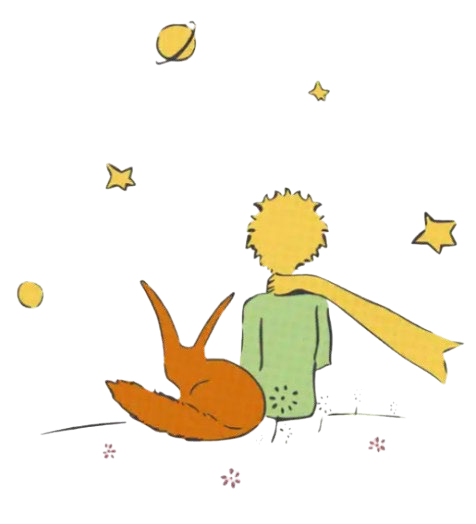